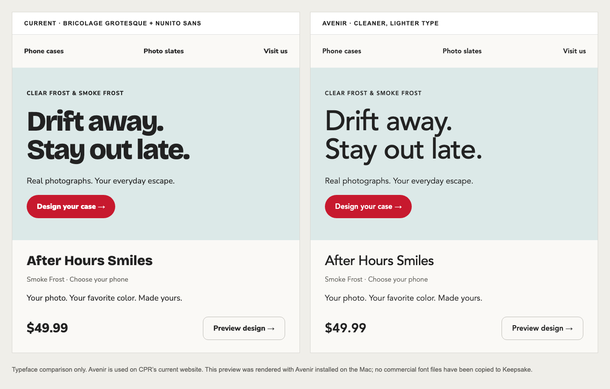

Current style on the left. Avenir direction on the right. This is a preview; the storefront font has not changed.
CPR’s current website uses Avenir. The comparison is an image so both styles display consistently on every device.
